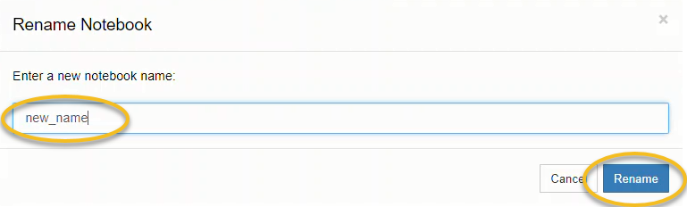
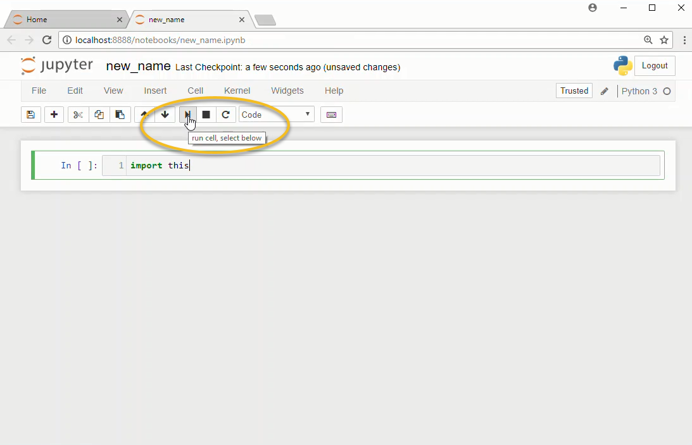

1.3. How to Open a Jupyter Notebook¶
In this section, we will run through how to open a Jupyter notebook on Windows 10. Jupyter notebooks are one way engineers can write and execute Python code. Jupyter notebooks contain Python code, the output of that code produces when it is run and markdown cells to explain what the code means. A Jupyter notebook can be started from the Anaconda Prompt, the Windows Start Menu or by using the Anaconda Navigator.
3 ways to open a Jupyter notebook:¶
Anaconda Prompt
Windows Start Menu
Anaconda Navigator
1. Anaconda Prompt¶
The first way to start a new Jupyter notebook is to use the Anaconda Prompt.
Go to the Windows start menu and select [Anaconda Prompt] under [Anaconda3].

If you don’t see the Anaconda Prompt in the Windows Start Menu, then you need to install Anaconda. Download Anaconda at the following link: Anaconda.com/downloads
The Anaconda Prompt window should look something like:

At the Anaconda Prompt type:
> jupyter notebook
This will start a Jupyter notebook. The output in the terminal will look something like below:
Copy/paste this URL into your browser when you connect for the first time,
to login with a token:
http://localhost:8888/?token=6bdef677d3503fbb23e1b4fa0c802ee7c20bdcfd4d9b9951
[I 16:14:12.661 NotebookApp] Accepting one-time-token-authenticated connection from ::1
A web browser should open and you should be able to see the Jupyter file browser:

In the upper right select [New] –> [Python 3]
You will see a new tab open in your web browser. This new browser tab contains a Jupyter notebook.

To rename the Jupyter notebook, click the file name at the top of the page to the right of the Jupyter icon.

This opens a dialog box where the new name can be typed.

Try typing the code below into the first cell in the Jupyter notebook to the right of the In [ ]: prompt
import this
Then click the run button in the middle of the menu at the top of the notebook.

2. Windows Start Menu¶
Another way to open a Jupyter notebook is to use the Windows start menu.
Open the Windows start menu and select [Anaconda3(64 bit)] –> [Jupyter Notebook]

This will open the Jupyter file browser in a web browser tab.
In the upper right select [New] –> [Python 3]
A new notebook will open as a new tab in your web browser
3. Anaconda Navigator¶
The last way to open a Jupyter notebook is by using the Anaconda Navigator. You can open the Anaconda Navigator using the Windows Start Menu and selecting [Anaconda3(64-bit)] –> [Anaconda Navigator].

This will open the Anaconda Navigator. In the middle of the page, in the Jupyter notebook tile, click [Launch]

This will open the Jupyter file browser in a web browser tab.
In the upper right select [New] –> [Python 3]
A new notebook will open as a new tab in your web browser.
Congratulations!
You know how to open a Jupyter notebook on your Windows 10. Now go write some Python code to solve some problems!